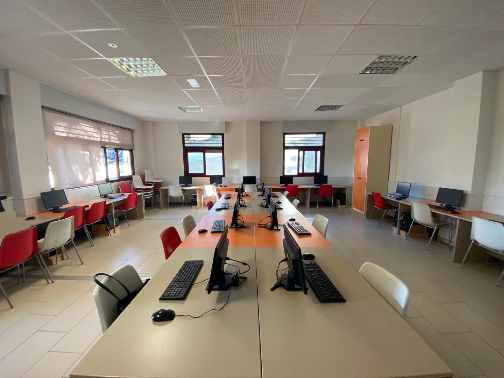

Sala de informática
Espacio equipado para aprender, crear e innovar.



Equipamiento completo
25 computadoras con software actualizado para trabajar en diferentes áreas y proyectos.

Ambiente cómodo
Espacio amplio, iluminado y climatizado para asegurar una experiencia agradable.

Seguridad y respaldo
Sistemas de protección y copias de seguridad para garantizar la integridad de la información.

Conectividad
Acceso a internet de alta velocidad para investigación, comunicación y aprendizaje.

Trabajo colectivo
Espacio ideal para trabajos en equipo, talleres, cursos y capacitaciones.

Recursos disponibles
Impresora, escáner y proyector para apoyar tus actividades académicas y presentaciones.
Información de la sala
La Sala de Informática está diseñada para brindar un entorno cómodo, moderno y funcional que permite el desarrollo de actividades académicas, investigativas y prácticas.
Normas de uso
- Mantén el orden y limpieza en tu área de trabajo.
- No instales programas ni configures las computadoras.
- Respeta a los demás usuarios y el equipamiento.
- Guarda tus archivos en dispositivos externos o en la nube.
- Reporta cualquier falla o inconveniente al personal encargado.